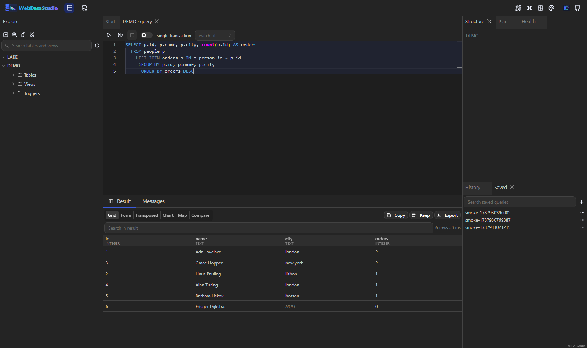
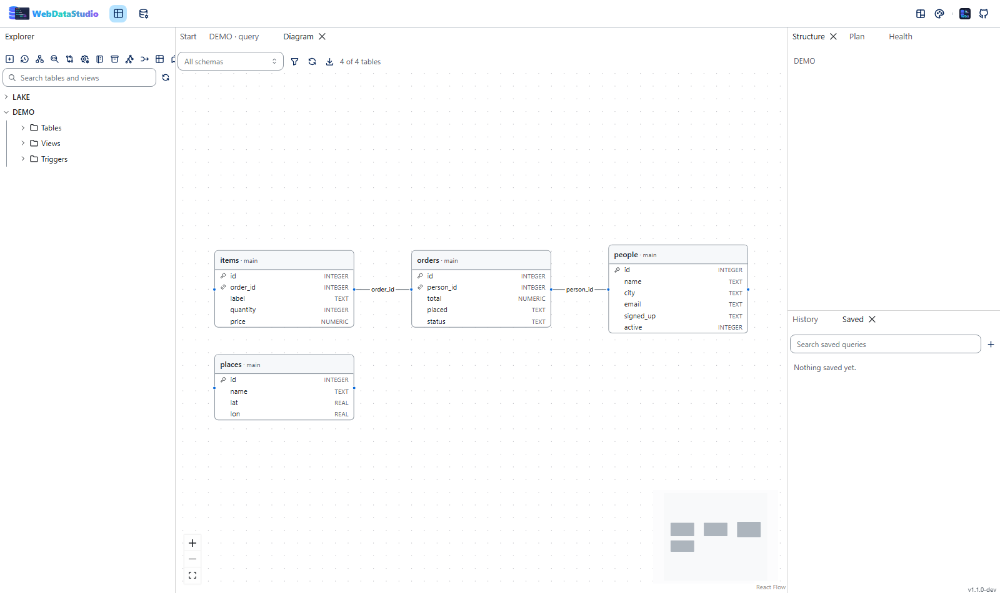
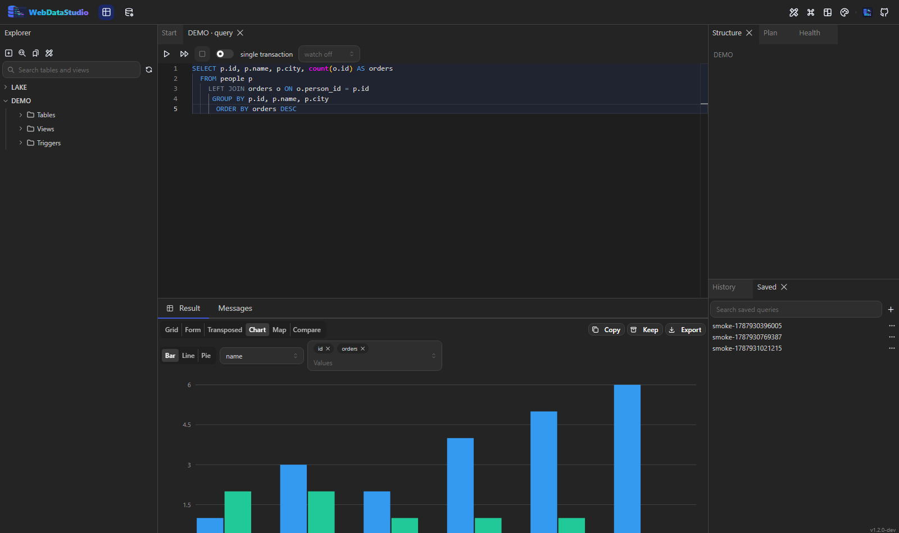
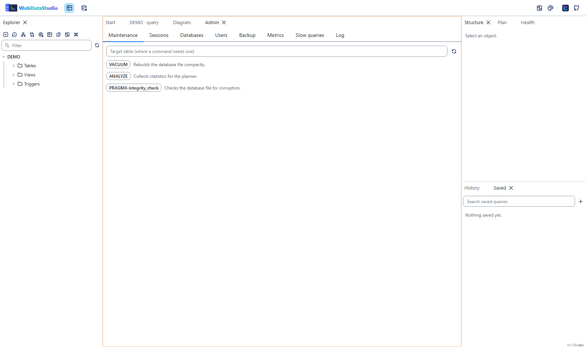
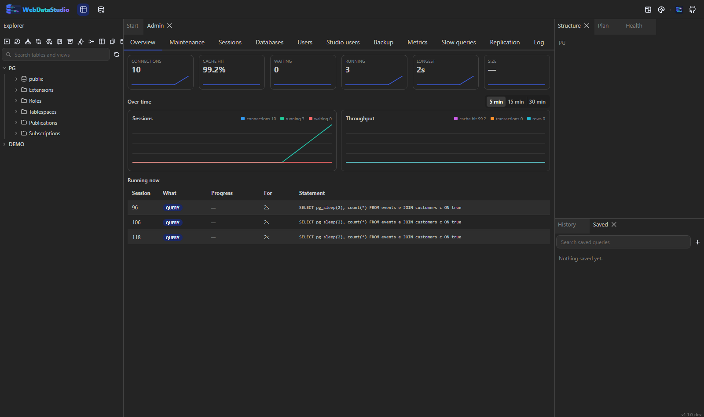
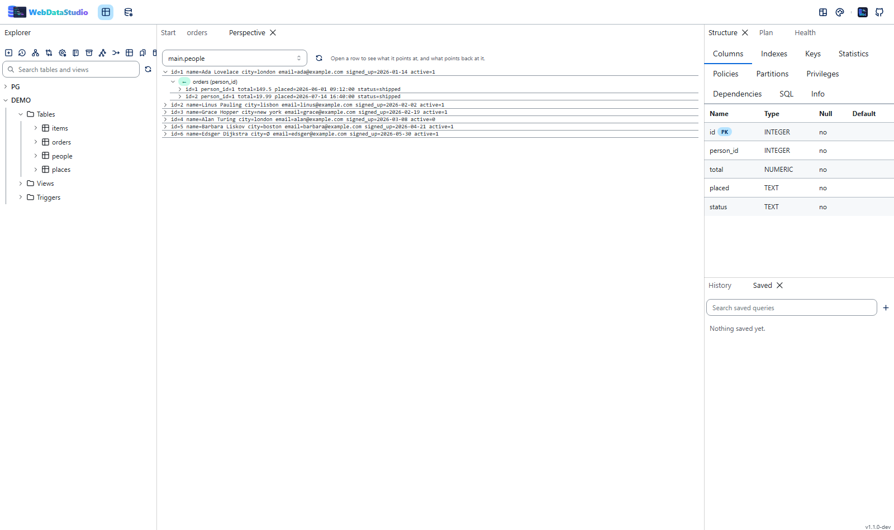
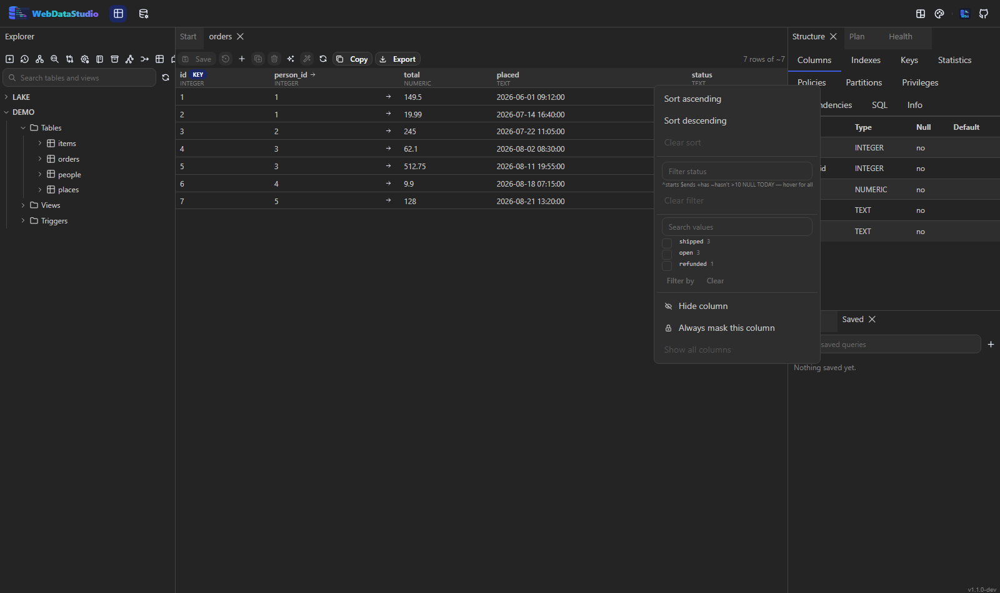
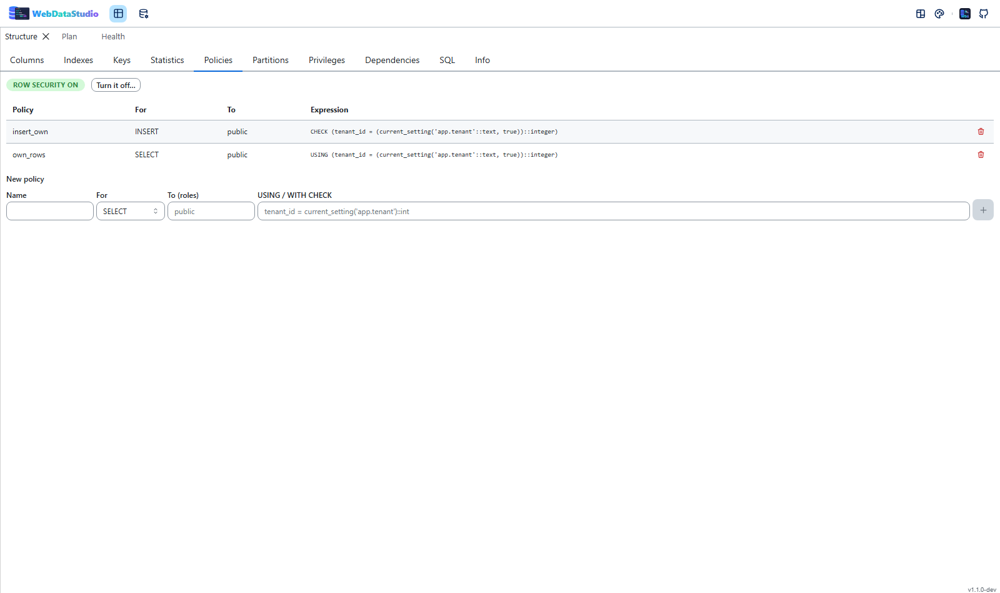

Neun Engines, eine Oberfläche
Jeder Treiber sagt, was er kann — und die Oberfläche blendet aus, was eine Engine nicht unterstützt.
 PostgreSQL
PostgreSQLMySQL
 MariaDB
MariaDBSQL Server
 SQLite
SQLiteOracle
 DuckDB
DuckDB ClickHouse
ClickHouse MongoDB
MongoDB Redis
RedisS3 · Blob · GCS
WebDataStudio ist ein Datenbank-Studio, das du selbst betreibst: ein Container, neun Engines, keine Installation auf irgendeinem Rechner. Abfragen schreiben, Daten bearbeiten, Schemas entwerfen, Ausführungspläne lesen und den Server im Blick behalten — aus jedem Browser im Netz.
# ein Container, ein Volume, fertig
docker run -d -p 8080:8080 -v wds-data:/data \
-e WDS_CONN_LOCAL="postgres://app:pw@db:5432/shop" \
ghcr.io/fgilde/webdatastudio
Jeder Treiber sagt, was er kann — und die Oberfläche blendet aus, was eine Engine nicht unterstützt.
PostgreSQLMariaDBSQLiteDuckDBClickHouseMongoDBRedisAlles davon steckt im selben Image; nichts ist für eine kostenpflichtige Stufe zurückgehalten.
Monaco mit dialektbewusstem Highlighting, schemabewusster Vervollständigung, Formatierung, hervorgehobenem Statement unter dem Cursor, F5 für die Auswahl, Parametern und Snippets.
Ein virtualisiertes Grid für hunderttausende Zeilen, gestreamt während die Abfrage noch läuft, mit Gruppierung, Formularansicht, transponierter Ansicht, Charts und einer Karte für Geodaten.
^beginnt, $endet, ~nicht, >10,
NULL, LAST MONTH — Leerzeichen ist UND, Komma ist ODER. Dazu die
Werte, die eine Spalte wirklich enthält, als Checkboxen mit Anzahl.
Eine Spalte aus der Tabelle leihen, auf die ein Fremdschlüssel zeigt — oder eine Zeile in alles öffnen, was mit ihr zu tun hat, so tief wie die Frage reicht. Oder einer Tabelle selbst folgen: die Seite liest sich getaktet neu, und was seit dem letzten Lesen dazukam, ist eingefärbt.
S3, Azure Blob, Google Cloud Storage oder ein Ordner — im Baum neben den Datenbanken. Ein Objekt ansehen, eine Parquet-, CSV- oder JSON-Datei (oder ein ganzes Prefix) über DuckDB als Tabelle abfragen und daraus eine echte Tabelle in der Datenbank daneben machen.
Eine JSONB-Spalte ist in den meisten Grids eine Zelle Text. Hier hat sie eine Struktur:
welche Pfade es gibt, wie oft, welche Typen, ein Beispiel — und das SELECT,
das sie zu Spalten macht, in der Schreibweise dieser Engine.
Eine Transaktion über mehrere Statements offen halten: das UPDATE ausführen,
ansehen, was es getan hat — sichtbar nur für dich —, und dann committen oder zurückrollen.
Eine, zu der niemand zurückkommt, beendet das Studio selbst; ein geschlossener Browser
hinterlässt also keine Sperren.
Kein SQL, kein Problem: eine Collection wird vom Server mit einem find
geblättert, sortiert und gefiltert, und eine Redis-Datenbank ist ihre Schlüssel mit Typ,
TTL, Länge und Speicher — eine Cache-Inventarliste, die sich sortieren und exportieren
lässt. Ein Schlüssel öffnet als Feld und Wert, Mitglied und Score oder Index und Wert.
Tabellengrößen werden gemessen, wann immer jemand hinsieht — die Historie baut sich selbst auf; die größte Änderung zuerst, mit Rate pro Tag. Dazu, was dieses Studio immer wieder ausführt, nach Form gruppiert und mit Trend — und eine aufgezeichnete Minute, gelesen vom Index-Advisor.
Der Katalog kann nicht sagen, dass ein Drittel der Bestellungen von gestern keinen Kunden hat. Eine Regel kann es: hat einen Wert, keine Duplikate, in einem Bereich, zeigt auf eine existierende Zeile, ist aktuell. Jede zählt die Zeilen, die sie brechen — und eine fehlschlagende Regel wird ein Health-Finding.
Diese Zeilen, die Zeilen, auf die sie zeigen, und alles Personenbezogene ersetzt — ein SQL-Skript, das in eine leere Datenbank lädt. Schlüssel bleiben unangetastet, und derselbe Wert wird immer zum selben Pseudonym: die Tabellen passen also weiter zusammen.
Mit Entra, Keycloak, Auth0 oder Okta anmelden und deren Gruppen auf die Rollen des Studios abbilden — oder die Konten in der Umgebung behalten. In beiden Fällen hinterlässt jedes Statement, jeder Export und jeder abgelehnte Zugriff eine Zeile, die ein Admin liest.
Zeilen, leere Werte, verschiedene Werte, kleinster und größter — je Spalte, in einem
Statement. Dazu die Spalten, deren Werte wie IBAN, Kartennummer oder Adresse
aussehen: so wird col_17 gefunden und maskiert.
Der Advisor schreibt das CREATE INDEX; Try it legt es an, fragt die
Engine erneut nach dem Plan und wirft es weg. „Der Planner würde ihn wohl nutzen" ist genau
der Teil, den alle falsch einschätzen.
Ein Statement, das alle Zeilen nimmt, liest die Tabelle vorher in ein Archiv — eine Datei, die das Studio wieder öffnen und als Inserts ausschreiben kann. Undo galt nie für Statements; jetzt schon.
Bind-Parameter werden Felder, der Link trägt die Werte und läuft von selbst. „Die Zahlen vom letzten Monat" ist damit etwas zum Verschicken statt zum Erklären — und es liest nur, was auch immer die Abfrage sagt.
COMMENT ON braucht ein DDL-Recht und eine Migration, also landet Erarbeitetes
in einer Chat-Nachricht. Eine Notiz hier hat Namen und Datum und steht neben der Tabelle,
dem View oder der Funktion, um die es geht.
Ein MCP-Endpunkt mit derselben Abmachung wie für Menschen: maskierte Spalten bleiben maskiert, eine nur-lesende Verbindung bleibt nur-lesend, und ein Schreibvorgang wird vorher gezeigt und gehasht.
Ein Ergebnis als Datei behalten, die das Studio aufbewahrt — wie die Tabelle vor der Migration aussah —, später wieder als Grid öffnen und die Zeilen als Inserts ausschreiben.
Zellen bearbeiten wie in einer Tabellenkalkulation. Vor der Ausführung siehst du das exakte SQL, und eine Tabelle ohne Primärschlüssel sagt, warum sie nicht bearbeitbar ist.
CSV, TSV, Excel, JSON, NDJSON, XML, YAML, Markdown, HTML, SQL und Parquet — gestreamt statt gepuffert. Import aus CSV, Excel, JSON und SQL, oder eine Tabelle in eine andere Engine kopieren.
Tabellen-Designer, Index- und Constraint-Verwaltung, Editoren für Views, Routinen, Trigger und Sequenzen, ER-Diagramm mit automatischem Layout — und für jede Änderung eine Statement-Vorschau, daneben alles, was von dem Objekt abhängt.
Geschätzte und tatsächliche Pläne mit Kosten-Heatmap, ein Index-Berater, der das
CREATE INDEX gleich schreibt, Deep Analyze, langsame Abfragen und
Server-Metriken.
Wartungsbefehle, Sitzungen samt Beenden, Datenbanken, Benutzer und Rechte, das Server-Log, ein Dashboard, das seine Zahlen über eine halbe Stunde zeichnet, sowie Backup und Restore über die Werkzeuge der Engine selbst.
Row Level Security und ihre Policies, die Partitionen einer partitionierten Tabelle samt Grenzen, der Quelltext einer Funktion und ein Lauf in einer zurückgerollten Transaktion — dazu Extensions, Rollen, Tablespaces und Publications im Baum.
Verbindungen kommen aus Umgebungsvariablen — ein Studio für deinen Stack ist ein Container in Docker Compose, Kubernetes oder einem .NET-Aspire-App-Host.
Dieselbe Anwendung in zwei ihrer 21 Themes.








In den App-Host hängen — die Verbindungszeichenfolge deiner Ressource kommt automatisch an.
var db = builder.AddPostgres("db").AddDatabase("shop");
builder.AddContainer("studio", "ghcr.io/fgilde/webdatastudio")
.WithHttpEndpoint(port: 8080, targetPort: 8080)
.WithEnvironment("WDS_CONN_SHOP", db.Resource.ConnectionStringExpression)
.WithVolume("wds-data", "/data");
Nur freie und Community-Editionen, Stand August 2026. Jedes dieser Werkzeuge ist gut; die Tabelle sagt, welches zu einem browserbasierten, selbst gehosteten Setup passt.
| WebDataStudio | DbGate | Adminer | phpMyAdmin | pgAdmin 4 | CloudBeaver CE | |
|---|---|---|---|---|---|---|
| Läuft im Browser | ja | ja | ja | ja | ja | ja |
| Offizielles Container-Image | ja | ja | ja | ja | ja | ja |
| Lizenz | MIT | GPL/Premium | Apache 2.0/GPL | GPL | PostgreSQL-Lizenz | Apache 2.0 |
| Relationale Engines | PostgreSQL, MySQL/MariaDB, SQL Server, SQLite, Oracle, DuckDB, ClickHouse | PostgreSQL, MySQL/MariaDB, SQL Server, SQLite, Oracle, ClickHouse und weitere | MySQL/MariaDB, PostgreSQL, SQLite, SQL Server, Oracle, Firebird | MySQL/MariaDB | PostgreSQL | viele, über JDBC |
| Einen Wert in jeder Tabelle finden, serverseitig | ja | nein | nein | nein | nein | ja |
| Geplante Jobs: Agent, pg_cron, Events | lesen, Änderungen als Statement | nein | nur Agent | nur Events | nein | ja |
| Buckets und Dateien als Verbindung, als Tabellen abfragbar | S3, Azure Blob, GCS, ein Ordner | nein | nein | nein | nein | Dateien, keine Buckets |
| MongoDB und Redis | beides | beides | nein | nein | nein | in der Enterprise-Edition |
| Verbindungen aus Umgebungsvariablen | ja | ja | ein Server pro URL | ja | über servers.json | über Konfigurationsdatei |
| ER-Diagramm | ja | ja | nein | Designer | ja | ja |
| Ausführungspläne | geschätzt und tatsächlich | Textplan | EXPLAIN-Ausgabe | EXPLAIN-Ausgabe | grafisch | ja |
| Index-Berater und Deep Analyze | ja | nein | nein | Berater für MySQL-Variablen | nein | nein |
| Schema- und Datenvergleich | ja | in der Premium-Edition | nein | nein | nein | nein |
| Backup und Restore aus der Oberfläche | ja | nur Export | SQL-Dump | SQL-Dump | ja | nur Export |
| Preis für all das | kostenlos | Kern kostenlos, Premium kostenpflichtig | kostenlos | kostenlos | kostenlos | Kern kostenlos, Enterprise kostenpflichtig |
Etwas veraltet? Ein Issue aufmachen — ein Vergleich taugt nur, solange er stimmt.
Der Container ist der Hauptweg. Die Desktop-Builds sind derselbe Server in einer einzelnen Datei.
docker run -d -p 8080:8080 -v wds-data:/data ghcr.io/fgilde/webdatastudio
Image auf
GHCR
Eine eigenständige Datei pro Plattform; starten, und der Browser geht auf.
Releases
.NET 10 und Node 22, dann dotnet run und npm run dev.
Entwicklungs-Anleitung